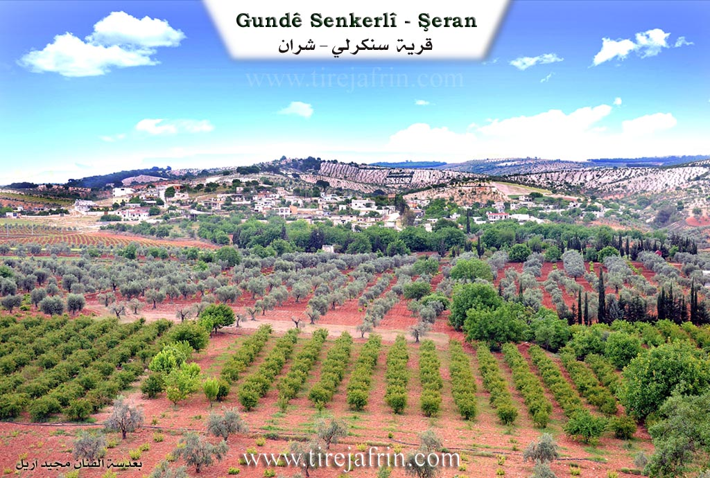
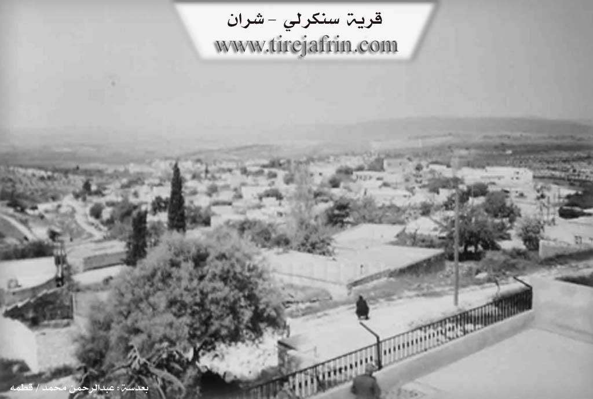

General Information
Nahiya (Subdistrict)
Şera
Also Known As
Sinkanli, Sinkari, Sinkarli, Sînka, سنكانلي، سنكري, سنكرلي, سينكو
Tribes
Sinkan, Şikaka, Şîkak
Families, Clans, etc.
Bekir Endiya, Bekriya, Cafera, El Çepera, Hûr Betalo, Mala Cerah, Mala Hemkerê, Mala Hemê, Mala Hemûşê, Mala Heswiyê Qitmê, Mala Mistefê Kelek, Mala Mûsê Begê, Mala Sorik, Mala Xawêr, Mala Îsa, Xeleb Dalo, Çawîş, Çawîşa, Çurûkzada, Îbrahîm Elî Axa, Şêx

Photos


Basic Information about Sînka
Source: Afrin 366
Other Landmarks: Nîrwa Ozan, Geliyê avê, Mekteba gundê Sînko
Summaries
I. Summary from TirejAfrin Site (English) of Sînka
Source: https://www.tirejafrin.com/site/kura%20afrin%20%20sheran%20-%20S%C3%AEnka.htm
It was stated in the book جبل الكرد (عفرين) دراسة جغرافية Çiyayê Kurmênc (Efrîn): A Geographical Study: Snka, Sinkerlî, Sinkanlî, Sinkerî / 2818 inhabitants, altitude 590m, 1km distance /:
Sînka: The name of a winter bird, and Sinkan is a Kurdish tribe found in the province of Batman in Northern Kurdistan. And Sinkerlî means "tool maker," which is a designation of Kurdish origin.
It is a large village situated on a limestone plateau. The settlement of the area is ancient, indicated by the presence of caves and carved grottoes on the slope of the plateau.
It was stated in the book عفرين .... نهرها وروابيها الخضراء Efrîn... Her River and Her Green Hills: Sinkerlî: A village in Çiyayê Kurmênc following the district of Şeran, area of Efrîn, governorate of Heleb, (2776 inhabitants). It is a village of medium size regarding population and is old, located on a slope and limestone plateau, with a valley in front of it from the southern side.
It is bordered on the north by a mountain chain and slopes planted with olive trees, grapevines, and forest trees, and the village of Cemanlî; and on the south by a deep watercourse, mountain chains, and valleys planted with olive trees, and the village of Qetme; and on the east by a rugged mountain chain and a deep valley, and at the top of the mountain elevation is the village of Bafilyûn; and on the west by a slope and a plain planted with olive and walnut trees and the town of Şeran nearby, where a deep valley separates Sinkerlî and Şeran.
The number of its houses reaches approximately 150 houses and its age is about 500 years. Its old houses are stone and mud with flat wooden roofs, and the modern ones are cement and stone, which have spread westward and southward. It is among the old villages in the district of Şeran.
Available in the village are an electricity network, drinking water belonging to the state, telephone from Şeran, a mosque, a modern primary school, and a technical olive press. There is also a shrine (mazar) on the eastern side of the village. It belongs to the municipality of Şeran. An asphalt road reaches the center of the village, connecting it with the district center. The residents work in the cultivation of olives and grapevines and livestock breeding.
Among its most important families is the family of Îbrahîm Elî Axa.
Village Mukhtar: Cemal Cabo
Sources of Information:
- Book: جبل الكرد (عفرين) دراسة جغرافية Çiyayê Kurmênc (Efrîn): A Geographical Study by د. محمد عبدو علي Dr. Mihemed Ebdo Elî.
- Book: عفرين .... نهرها وروابيها الخضراء Efrîn... Her River and Her Green Hills by عبدالرحمن محمد Ebdulrehman Mihemed from the village of Qetme.
- Studies of Navenda Tirej Soft / Ebdulrehman Hacî Osman.
- Some residents of the villages.
Preparation and execution: Manager of the site Tirej Efrîn: Ebdulrehman Hacî Osman 20/12/2013
II. Summary of Sînka from Afrin 366
Source: https://www.youtube.com/watch?v=SatzlseopvA
The documentary focuses on the village of Sînka (also referred to as Sînko), situated in the Şeran district of the Afrin region. The village is geographically significant due to its close proximity to the district center of Şeran, located directly opposite the town. The settlement is described as large and picturesque, nestled within a landscape defined by a water valley known as Geliyê avê. A watercourse flows through this area, and the terrain is connected by a bridge, contributing to an environment described as lush and water rich.
The history of Sînka is deeply rooted in the ancient landscape. According to the host and a village elder named Apê Mihemed, the ancestors of the current residents originally inhabited the numerous natural caves (şikeft) that characterize the area. These caves, which are described as ancient ("kevnar") and potentially thousands of years old, served as dwellings and stables long before the construction of modern concrete structures or traditional earthen houses. The elder recalls that in the past, each cave had a specific owner and name associated with the family that utilized it, though these specific names have largely faded from collective memory. This transition from cave dwelling to constructed housing represents the primary historical evolution of the community.
Socially, Sînka is a substantial community, with estimates of its size ranging between 200 and 250 households. While the transcript does not detail specific tribal affiliations, it highlights the social history of Mala Mistefê Kelek. This family is remembered for possessing the first landline telephone ("nosilkî") in the village. Their home became a vital social hub where neighbors would gather to communicate with relatives living in Europe or other cities, illustrating the communal nature of the village before the spread of mobile technology. Other residents mentioned include Ebû Stêf and Mezet.
In the present day, Sînka is equipped with modern infrastructure, including a government electricity grid and a local school, Mekteba gundê Sînko. During the filming, the village appeared relatively quiet, as many residents were reported to be working in the bazaars or tending to their olive groves. The driver mentions a specific location within the village called Nîrwa Ozan. The narrative emphasizes a strong sense of nostalgia and attachment to the land, with the driver contrasting the difficulties of life in exile ("gurbet") with the comfort of being in one's homeland. The documentary concludes with the host preparing to visit the neighboring villages of Xerabê Şara and Elqê.
II. Summary of Sînka from Multi Channel
Senkerlî, also known as Sînko, is a village located in the Şeran district of the Efrîn region. Its origins date back approximately five hundred to six hundred years, a timeline estimated by the age of the ancient Dara Tûyê, a large mulberry tree whose life spans the entire history of the settlement. The original inhabitants are Kurdish, comprising both Êzîdî and Muslim populations. They belong to the Şîkak tribe, a group that originally migrated from the Urfa region in search of water and grazing lands.
The village is currently home to original Kurdish inhabitants as well as displaced families from Hims and Idlib. Among the notable local lineages is the Çawîş family. Elders like Ebdilmenan Çawîş and Reşîd Çawîş preserve the local history. A prominent historical figure from this family was Qere Henan, who served as the village mukhtar over eighty years ago. Qere Henan was renowned for his wisdom and represented the interests of Senkerlî and neighboring villages at the government center in Kilis. According to local lore, he once cleverly mediated a complex divorce case by appealing to the shared blood and eyes of the father and child, impressing the judge so much that the magistrate suggested Qere Henan take his place.
The village features several prominent landmarks. To the south lies Bîra Îsa, a historic well dug by a man named Îsa. Located in the valley known as Geliyê Bîrê, this well historically provided drinking water for the entire village and their livestock. The massive Dara Tûyê shades the area, serving as a traditional gathering place for village elders to sit, eat, and socialize. At the top of the village hill rests the sacred shrine known as Ziyareta Xerîb. The architectural heritage is preserved in extremely old houses built from fieldstone with thick arches and traditional roofing, such as the home of Hec Mistefa which was built over a century ago.
The people of Senkerlî are known for being honest, kind, yet toughened by their rugged mountain geography. Agriculture is central to their livelihood, particularly the cultivation of olives, vines, and pomegranates. Women in the village prepare traditional Kurdish regional dishes like Boraniyye. Residents proudly preserve their heritage, with some elders like Ebu Azad still wearing traditional Kurdish clothing and performing ancestral dances including Baqiye, Hemo, Qertal, Xatûniye, Şêxaniye, and Reş. Despite maintaining these strong agrarian and cultural roots, the village has evolved, seeing many residents move to Heleb and Efrîn for work, and now boasting a high rate of university graduates.
II. Summary of Sînka from Ax û Welat
Source: https://www.youtube.com/watch?v=6coPbGngf04
The village of Sînka is an ancient settlement located in the Şera district. The village name originates from the Sînka clan, which is a branch of the larger Şikaka tribe. Local accounts offer alternative theories, suggesting the name might come from the phrase singê çiyê, meaning the chest of the mountain, or from a bird called Sîngok, but the tribal origin is considered the most historically accurate. As the local population grew, residents expanded outward to found the neighboring villages of Baflûn and Qestel Cindo.
Historically, before the modern city of Efrîn was established, Sînka served as an essential stop on the trade routes connecting Kilîs and Ezaz. To accommodate passing merchants and travelers, the villagers collectively built and maintained a central guest house known as an ode. The settlement today consists of around three hundred houses. The population is evenly divided between the Êzîdî and Misilman faiths. While the village was predominantly Êzîdî in the past, state assimilation policies and a desire for peaceful living led many families to convert and become Misilman. Despite this religious division, the community remains tightly knit, with some households containing biological brothers of different faiths.
Sînka is home to numerous distinct families, including Mala Îsa, Çawîşa, Cafera, Çurûkzada, Mala Cerah, Mala Mûsê Begê, Mala Hemê, Mala Hemkerê, Mala Hemûşê, Xeleb Dalo, Hûr Betalo, Bekir Endiya, Şêx, Bekriya, Mala Sorik, El Çepera, Mala Xawêr, and Mala Heswiyê Qitmê. Respected historical figures from the community include the village elders Qere Elî and Îbram Axa, as well as a memorable farmer named Elî Xelek whose image was painted by local artist Mihemed Çawîş.
The village features important sacred sites, most notably the shrine of Şêx Reman, situated in a rocky area known as Serî Dêr. In the past, when local children experienced delays in learning to walk, mothers would bring them to this shrine. They would guide the child around the sacred rocks three times, bake special bread, distribute sweets, and make offerings to seek a cure. Another revered local shrine is Şêx Xerîb. A famous natural landmark situated between Sînka and Qitmê is Geliyê Kuştiya, translated as the Valley of the Killed, named after an unrecorded historical conflict.
The documentary also features the neighboring village of Îska, where a resident named Ridwan practices a traditional method for healing a skin disease known as meristan. Passed down from his ancestors, this treatment involves making small bloodletting incisions on the affected areas of the patient over three consecutive Wednesdays.
Agriculture forms the backbone of the local economy. Villagers cultivate olives, apricots, pomegranates, and apples, and women prepare traditional winter provisions such as jams, dried vegetables, and pomegranate molasses to sustain their families throughout the year.
Transcriptions and Subtitles
| Source | Video | Subtitles | Transcript |
|---|---|---|---|
| Afrin 366 1 | Watch Video | Download SRT | View Transcript |
| Ax û Welat 1 | Watch Video | Download SRT | View Transcript |
| Multi Channel 1 | Watch Video | Download SRT | View Transcript |
Foundation/Origin Information of Sînka
The settlement of the region is ancient evidenced by the presence of caves and caverns carved in the slope of the plateau.
Source: TirejAfrin Site
Possible Village Name Meaning of Sînka
Sinka: Name of a winter bird. "Sinkan" is a Kurdish tribe found in Batman province in northern Kurdistan. Sinkarli means "tool maker", and it is a Kurdish naming of origin.
Source: TirejAfrin Site